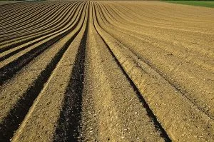

חלק חשוב בחיבת הארץ היא המצווה לקנות קרקע בארץ ישראל. ומצאנו בתורה כמה מקורות לכך.
מעשה אבות לימוד לבנים: התורה מספרת לנו על אברהם אבינו ויעקב אבינו, שקנו קרקע בארץ ישראל במחיר יקר, ללמדנו: הקניין אותו כדאי לקנות יותר מכל קניין, ולשלם עליו כל מחיר שבעולם אשר יושת עליו, זהו קרקע בארץ ישראל.
התורה סיפרה שיעקב קנה חלקת שדה, להודיע: "כי מעלה גדולה יש לארץ ישראל, ומי שיש לו בה חלק, חשוב הוא כחלק עולם הבא" (אבן עזרא).
גדולי הדורות קנו קרקע בארץ ישראל, לפעמים אפילו לא ראו אותה כל ימי חייהם, רק בשביל לזכות למעלה נפלאה זו.
קנית קרקע בארץ ישראל מקנה למי שמבין ומעריך את א''י, את הזכות להיות בעולם הבא, כדברי הזהר "כָּל מִי שֶׁזּוֹכֶה בָּאָרֶץ הַקְּדוֹשָׁה הַזּוֹ, יֵשׁ לוֹ חֵלֶק לָעוֹלָם הַבָּא". חשוב מאוד לדעת זאת כבר בקניה.
מאברהם אבינו ודוד המלך לומדים, שגם אם אפשר לקבל קרקע בא''י בחינם, עדיף לקנות בכסף מלא, שכן דבר שמשקיעים בו כסף הוא מתקדש הרבה יותר, זוהי זכות גדולה מאוד לשלם על ארץ ישראל. וחשוב מאוד לעשות זאת בשמחה.
שלושה מקומות בא''י קנו אבותינו בכסף מלא ונתקדשו לדורות עולם. ואלו הם: חברון, שכם, והר המוריה. חברון, קנה אברהם. שכם, קנה יעקב. הר המוריה, קנה דוד.
טעם נוסף, שעדיף לקנות בכסף מאשר לקבל בחינם הוא, שלארץ ישראל צריך להתחבר לא רק בגוף, אלא גם בנפש, לאהוב אותה תכלית אהבה, דבר שאדם משקיע בו, הוא אוהב אותו, נתינה מולידה אהבה. בשביל זה יש לתת מרצון ובאהבה.
קניה בכסף ובכוונה לשם מצווה, של מקום בא''י מקדשת את המקום, לא רק בעולם הבא, אלא גם בעולם הזה מקום זה מתקדש מאוד, לנצח נצחים.
בזוהר מבואר שכל מצווה (חוץ מלימוד תורה) אין לעשותה בחינם, אלא בשכר שלם – היינו לא לבקש הנחות.
גם לאנשים היושבים בחו"ל מצוה גדולה לקנות נחלה בארץ ישראל, ואף אם ישבו בחו"ל נחשב להם קצת כאלו יושבים בארץ ישראל.
יהודי אנוס, שאינו יכול לעקור דירתו לארץ, יקנה בית בארץ ישראל, ישכיר אותו בזול לבן תורה, ומעלה עליו הכתוב כאילו דר בתוכה ובשם ישראל יכונה.
הלכות אלו התבארו בהחרבה גדולה בספרנו בית ראובן.
הרב מרדכי אליהו זצ''ל סיפר: פעם אחת בא אלי יהודי חשוב מארצות הברית שחשב לקנות בתים ונכסים רבים בארץ ישראל. העסקה המוצעת הייתה בסכום ניכר וגדול והוא חשש וביקש עצה וברכה. אמר לו הרב שיש ערך גדול לקנות ולחזק את ישוב הארץ והגרים בה. עיני העמים נשואות לכל דבר שקורה בארץ ישראל ובמיוחד למתיישבים בה. ולפי גודל מעלתה וישובה, כך גודל ההתנגדות של אומות העולם. לכן חשוב לחזק אותם. עוד אמר לו הרב: כי חשוב שלכל יהודי מארצות הברית ומשאר מדינות העולם יהיו נכסים וכספים בארץ ישראל. אם יום אחד הוא ירגיש שהאדמה בוערת מתחת רגליו בארץ העמים, אם הוא לא יוכל להוציא כספים ממקום מושבו. אם הוא ירגיש יום אחד שחו"ל היא לא הבית שלו והעם היושב שם הוא לא העם שלו, הוא ידע להגיע לארץ ישראל. שם הבית שלו ושם הנכסים שלו והוא יבוא למקום מסודר.
ובאמת כמה וכמה עשירים שאני מכיר שהתיעצו עם הרב, השקיעו את כספם בארץ ישראל והרוויחו. אמנם היו כמה עשירים גדולים שהשקיעו מליארדים בחו"ל נגד עצת הרב באמרם מה מבין הרב בעסקים והפסידו כספים רבים מאוד, מאות מליונים של דולרים. את חלקם אנו מכירים כי הם מפורסמים וחלקם לא מפורסמים אבל כולם באותו מקום. מיד כשעזבו לחו"ל הלכה מהם הברכה הגדולה של הארץ.
קרקע בארץ ישראל - ביטוח בעולם הבא
הרב המשיך וסיפר: אמרתי לו הוא שכל קנין בארץ ישראל הוא קנין רוחני גדול. פתחתי לו חומש בראשית (בראשית ל"ג י"ט) והראתי לו את דברי האבן עזרא שם, דבר פלא ביותר (והביאום שם הרמב"ן, רבינו בחיי וכפתור ופרח י). הפסוקים מדברים שם על יעקב שקנה חלקת אדמה בארץ ישראל. והכתוב אומר עליו "ויקן את חלקת השדה". "והזכיר זה הכתוב להודיע כי מעלה גדולה יש לארץ ישראל. ומי שיש לו בה חלק חשוב הוא כחלק עולם הבא".
מי שגר בארץ ישראל בודאי הוא "נשוא עוון", כדברי רבי אלעזר בגמרא בכתובות (קיא.) ו"כל הדר בארץ ישראל דומה כמי שיש לו אלוה" (שם). ורבי מאיר אומר (ספרי דברים של"ג) "כל הדר בארץ ישראל וקורא קרית שמע שחרית וערבית ומדבר בלשון הקדש הרי הוא בן העולם הבא" (עיין אור החיים דברים לג כא). כל הדברים הללו הם פלא גדול. מדובר על עסקאות נדל"ן וחכמים אומרים שזה חלק בעולם הבא. ללמדך שארץ ישראל היא קשורה לגמרי לעולם הרוחני.
אותו יהודי מארצות הברית התחזק מאוד מדברי האבן עזרא הללו, והחליט במקום לבצע את העסקה הגדולה הזו. "מצווה גוררת מצווה" ומיד אחרי ההחלטה הזו, אמר בליבו אם מעלתה של הארץ הזו היא כל כך גדולה, למה שרק חלק מרכושי יהיה בארץ ישראל? אבוא אני בעצמי עם כל משפחתי ורכושי לארץ הקדושה הזו.